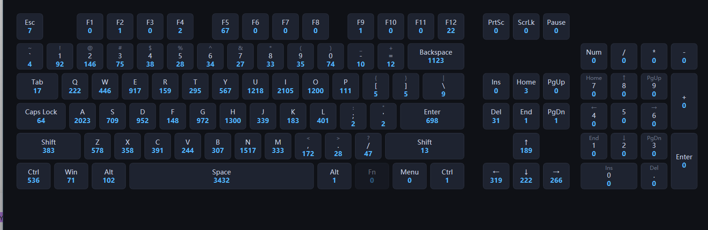

104 + 6
键盘键位 + 鼠标键（含滚轮）
常驻托盘的 WPF 桌面工具：通过 Win32 低级钩子监听全系统的键盘与鼠标事件， 在一张可视化 104 键面板上实时高亮与计数，并累计滚轮滚动格数（换算圈数）与 光标移动距离（换算 cm / m）。普通用户权限运行，退出前数据落盘 JSON，下次启动接着记。
| 指标 | 口径 | 实现要点 |
|---|---|---|
| 按键 / 鼠标键 | 单次按下 +1；按住重复不计；未映射键（媒体键等）计入"其他键" | WH_KEYBOARD_LL + _downKeys 去重 |
| 小键盘 Enter | 与主 Enter 分开计数（LLKHF_EXTENDED 扩展位区分） | flags & LLKHF_EXTENDED |
| 滚轮格数 | |Δ| / 120 累计；高精度滚轮小步进（Δ<120）也正确累加 | Interlocked.Add，钩子线程写 |
| 圈数 | 格数 ÷ 24（常见滚轮每圈 24 格，界面标注口径） | NotchesPerRevolution = 24 |
| 移动距离 | 相邻 WM_MOUSEMOVE 点欧氏距离累加（像素）； cm = px ÷ pxPerCm；<100cm 显示 cm，否则 m | √(Δx²+Δy²)，UI 每秒轮询 |
| 鼠标 5 键 | 左/右/中 + X1/X2 侧键；X 键按 mouseData 高 16 位区分 | WM_XBUTTONDOWN → hi==2 ? X2 : X1 |
| 模块 | 职责 | 关键实现 |
|---|---|---|
| HookService | 全局键盘+鼠标钩子安装/卸载，事件分发，滚轮与距离线程内累计 | SetWindowsHookEx / 委托防 GC / Interlocked |
| KeyCountViewModel | 计数、200ms 高亮、总计聚合、滚轮/距离换算、重置命令 | DispatcherTimer 轮询 + INotifyPropertyChanged |
| MainWindow | 可视化键盘渲染（Viewbox+Canvas）、托盘行为、WM_ENDSESSION 处理 | HwndSource.AddHook / OnClosing 拦截 |
| TrayIconService | NotifyIcon 托盘图标、右键菜单（显示/重置/退出） | WinForms NotifyIcon + ContextMenuStrip |
| StorageService | JSON 读写 keycount.json（含 CursorDistancePx 基线） | System.Text.Json |
| KeyboardLayout / KeyMapping | 104 键几何布局（u=50px 网格）与虚拟键码→界面 Id 映射 | 22.75u × 6u Canvas 坐标系 |
| 验证项 | 方法 | 结果 |
|---|---|---|
| 键盘计数 | SendInput 注入 A×3 + Space×1，读窗口标题 | 总按键 4 ✓ |
| 长按去重 | 按住 C 900ms（产生连续 repeat） | 仅 +1 ✓ |
| 鼠标左/右/中 | SendInput 注入三键各 1 次 | 计数 +3 ✓ |
| 滚轮统计 | 注入上 5 格 + 下 5 格（|Δ| 口径） | 累计 20 格 ✓ |
| 滚轮恢复 | 退出保存后重启进程 | 启动即 20 格 ✓ |
| 移动距离 | 注入 60 步 × √(15²+8²)≈17px 相对移动 | 42.1cm / 3065px ✓ |
| 重置统计 | UIA Invoke「重置统计」按钮 | 滚轮/距离归零 ✓ |
| 关闭到托盘 | PostMessage WM_CLOSE | 进程存活 ✓ |
| 关机路径 | 模拟 WM_ENDSESSION(wParam=1) | exit 0 + 落盘 ✓ |
| 持久化 | 读回 keycount.json 全量核对 | A:3 / Space:1 ✓ |

KeyClickCounter.exe（自包含，目标机无需安装 .NET）；或源码目录 dotnet run --project KeyClickCounterdotnet publish -c Release -r win-x64 --self-contained true（需 .NET 10 SDK）